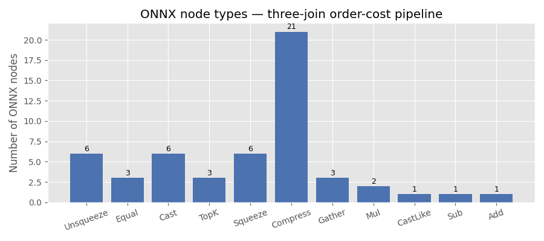
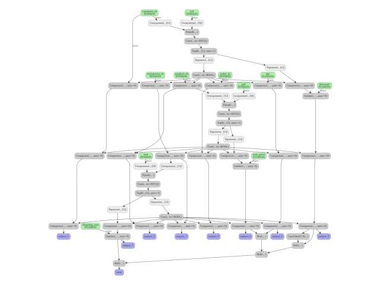

Note
Go to the end to download the full example code.
Three Consecutive Joins to ONNX (pandas and polars-style)#
This example shows how to convert a pipeline that performs three consecutive
inner joins into a self-contained ONNX model using
dataframe_to_onnx().
Two flavours are demonstrated:
pandas — pandas DataFrames are passed directly as
input_dtypesso column names and dtypes are extracted automatically.polars / TracedDataFrame — explicit dtype dicts are supplied; the transform callable uses the
TracedDataFrameAPI, which mirrors polars’polars.LazyFrame.
Scenario#
We model a simplified order-processing pipeline with four tables:
orders —
order_id,customer_id,product_id,warehouse_id,qtycustomers —
cid,discountproducts —
pid,unit_pricewarehouses —
wid,shipping_cost
The three consecutive joins are:
orders⋈customersonorders.customer_id = customers.cidresult ⋈
productsonresult.product_id = products.pidresult ⋈
warehousesonresult.warehouse_id = warehouses.wid
After the joins we compute the final order cost:
total = qty * unit_price * (1 - discount) + shipping_cost
Equivalent polars code#
import polars as pl
orders_lf = pl.LazyFrame({
"order_id": [1, 2, 3, 4],
"customer_id": [10, 20, 10, 30],
"product_id": [100, 200, 300, 100],
"warehouse_id": [1000, 2000, 1000, 2000],
"qty": [2.0, 1.0, 3.0, 1.0],
})
customers_lf = pl.LazyFrame({"cid": [10, 20, 30], "discount": [0.1, 0.2, 0.0]})
products_lf = pl.LazyFrame({"pid": [100, 200, 300], "unit_price": [50.0, 80.0, 60.0]})
warehouses_lf = pl.LazyFrame({"wid": [1000, 2000], "shipping_cost": [5.0, 8.0]})
j1 = orders_lf.join(customers_lf, left_on="customer_id", right_on="cid")
j2 = j1.join(products_lf, left_on="product_id", right_on="pid")
j3 = j2.join(warehouses_lf, left_on="warehouse_id", right_on="wid")
result_lf = j3.select(
[
(
pl.col("qty") * pl.col("unit_price") * (1 - pl.col("discount"))
+ pl.col("shipping_cost")
).alias("total")
]
)
print(result_lf.collect())
The dataframe_to_onnx() converter below produces an ONNX model
that is equivalent to this polars pipeline.
import numpy as np
import onnxruntime
from yobx.helpers.onnx_helper import pretty_onnx
from yobx.reference import ExtendedReferenceEvaluator
from yobx.sql import dataframe_to_onnx
Sample data#
Each column is a 1-D numpy array; the four tables are passed as separate arguments to the transform function.
order_id = np.array([1, 2, 3, 4], dtype=np.int64)
customer_id = np.array([10, 20, 10, 30], dtype=np.int64)
product_id = np.array([100, 200, 300, 100], dtype=np.int64)
warehouse_id = np.array([1000, 2000, 1000, 2000], dtype=np.int64)
qty = np.array([2.0, 1.0, 3.0, 1.0], dtype=np.float32)
cid = np.array([10, 20, 30], dtype=np.int64)
discount = np.array([0.1, 0.2, 0.0], dtype=np.float32)
pid = np.array([100, 200, 300], dtype=np.int64)
unit_price = np.array([50.0, 80.0, 60.0], dtype=np.float32)
wid = np.array([1000, 2000], dtype=np.int64)
shipping_cost = np.array([5.0, 8.0], dtype=np.float32)
# reusable feeds dict (column name → numpy array)
feeds = {
"order_id": order_id,
"customer_id": customer_id,
"product_id": product_id,
"warehouse_id": warehouse_id,
"qty": qty,
"cid": cid,
"discount": discount,
"pid": pid,
"unit_price": unit_price,
"wid": wid,
"shipping_cost": shipping_cost,
}
expected_total = np.array([95.0, 72.0, 167.0, 58.0], dtype=np.float32)
1. Pandas — pass DataFrames as input_dtypes#
When pandas DataFrame objects are passed as input_dtypes,
dataframe_to_onnx() extracts column names and dtypes
automatically. This is the most concise entry point for code that already
builds its tables as pandas DataFrames.
import pandas as pd # noqa: E402
pd_orders = pd.DataFrame(
{
"order_id": order_id,
"customer_id": customer_id,
"product_id": product_id,
"warehouse_id": warehouse_id,
"qty": qty,
}
)
pd_customers = pd.DataFrame({"cid": cid, "discount": discount})
pd_products = pd.DataFrame({"pid": pid, "unit_price": unit_price})
pd_warehouses = pd.DataFrame({"wid": wid, "shipping_cost": shipping_cost})
The equivalent pandas pipeline using pandas.merge():
j1 = pd.merge(pd_orders, pd_customers, left_on="customer_id", right_on="cid")
j2 = pd.merge(j1, pd_products, left_on="product_id", right_on="pid")
j3 = pd.merge(j2, pd_warehouses, left_on="warehouse_id", right_on="wid")
j3["total"] = j3["qty"] * j3["unit_price"] * (1 - j3["discount"]) + j3["shipping_cost"]
def transform_pandas(orders, customers, products, warehouses):
"""Apply three consecutive inner joins and compute total order cost."""
j1 = orders.join(customers, left_key="customer_id", right_key="cid")
j2 = j1.join(products, left_key="product_id", right_key="pid")
j3 = j2.join(warehouses, left_key="warehouse_id", right_key="wid")
return j3.select(
[
j3["order_id"],
j3["qty"],
j3["discount"],
j3["unit_price"],
j3["shipping_cost"],
(j3["qty"] * j3["unit_price"] * (1.0 - j3["discount"]) + j3["shipping_cost"]).alias(
"total"
),
]
)
artifact_pandas = dataframe_to_onnx(
transform_pandas, [pd_orders, pd_customers, pd_products, pd_warehouses]
)
print("(pandas) ONNX input names :", artifact_pandas.input_names)
print("(pandas) ONNX output names:", artifact_pandas.output_names)
(pandas) ONNX input names : ['customer_id', 'product_id', 'warehouse_id', 'order_id', 'qty', 'cid', 'pid', 'wid', 'discount', 'unit_price', 'shipping_cost']
(pandas) ONNX output names: ['output_0', 'output_1', 'output_2', 'output_3', 'output_4', 'total']
Run with the reference evaluator and onnxruntime:
ref_pd = ExtendedReferenceEvaluator(artifact_pandas)
results_pd = ref_pd.run(None, feeds)
for name, val in zip(artifact_pandas.output_names, results_pd):
print(f" {name}: {val}")
total_idx_pd = artifact_pandas.output_names.index("total")
np.testing.assert_allclose(results_pd[total_idx_pd], expected_total, rtol=1e-5)
print("(pandas) Reference evaluator: totals match expected values ✓")
sess_pd = onnxruntime.InferenceSession(
artifact_pandas.SerializeToString(), providers=["CPUExecutionProvider"]
)
ort_results_pd = sess_pd.run(None, feeds)
np.testing.assert_allclose(ort_results_pd[total_idx_pd], expected_total, rtol=1e-5)
print("(pandas) OnnxRuntime: totals match expected values ✓")
output_0: [1 2 3 4]
output_1: [2. 1. 3. 1.]
output_2: [0.1 0.2 0.1 0. ]
output_3: [50. 80. 60. 50.]
output_4: [5. 8. 5. 8.]
total: [ 95. 72. 167. 58.]
(pandas) Reference evaluator: totals match expected values ✓
(pandas) OnnxRuntime: totals match expected values ✓
2. Define the transform — three consecutive joins (dtype-dict style)#
The same transform function is used when input_dtypes is supplied as
explicit dtype dicts — the entry point for code that mirrors the polars
polars.LazyFrame API. The callable receives
TracedDataFrame objects regardless
of which flavour of input_dtypes is chosen.
def transform(orders, customers, products, warehouses):
"""Apply three consecutive inner joins and compute total order cost."""
j1 = orders.join(customers, left_key="customer_id", right_key="cid")
j2 = j1.join(products, left_key="product_id", right_key="pid")
j3 = j2.join(warehouses, left_key="warehouse_id", right_key="wid")
return j3.select(
[
j3["order_id"],
j3["customer_id"],
j3["product_id"],
j3["warehouse_id"],
j3["qty"],
j3["discount"],
j3["unit_price"],
j3["shipping_cost"],
(j3["qty"] * j3["unit_price"] * (1.0 - j3["discount"]) + j3["shipping_cost"]).alias(
"total"
),
]
)
3. Convert to ONNX (dtype-dict style)#
dataframe_to_onnx() traces transform and emits a
self-contained ONNX model. The input_dtypes list describes each of the
four input tables in the same order as the function arguments.
dtypes_orders = {
"order_id": np.int64,
"customer_id": np.int64,
"product_id": np.int64,
"warehouse_id": np.int64,
"qty": np.float32,
}
dtypes_customers = {"cid": np.int64, "discount": np.float32}
dtypes_products = {"pid": np.int64, "unit_price": np.float32}
dtypes_warehouses = {"wid": np.int64, "shipping_cost": np.float32}
artifact = dataframe_to_onnx(
transform, [dtypes_orders, dtypes_customers, dtypes_products, dtypes_warehouses]
)
print("ONNX input names :", artifact.input_names)
print("ONNX output names:", artifact.output_names)
ONNX input names : ['customer_id', 'product_id', 'warehouse_id', 'order_id', 'qty', 'cid', 'pid', 'wid', 'discount', 'unit_price', 'shipping_cost']
ONNX output names: ['output_0', 'output_1', 'output_2', 'output_3', 'output_4', 'output_5', 'output_6', 'output_7', 'total']
4. Run with the reference evaluator#
ExtendedReferenceEvaluator lets us verify the model
without onnxruntime.
ref = ExtendedReferenceEvaluator(artifact)
ref_outputs = ref.run(None, feeds)
# Show the result
for name, val in zip(artifact.output_names, ref_outputs):
print(f" {name}: {val}")
# Verify totals manually:
# order 1: qty=2, price=50, disc=0.1, ship=5 → 2*50*0.9+5 = 95
# order 2: qty=1, price=80, disc=0.2, ship=8 → 1*80*0.8+8 = 72
# order 3: qty=3, price=60, disc=0.1, ship=5 → 3*60*0.9+5 = 167
# order 4: qty=1, price=50, disc=0.0, ship=8 → 1*50*1.0+8 = 58
total_idx = artifact.output_names.index("total")
np.testing.assert_allclose(ref_outputs[total_idx], expected_total, rtol=1e-5)
print("Reference evaluator: totals match expected values ✓")
output_0: [1 2 3 4]
output_1: [10 20 10 30]
output_2: [100 200 300 100]
output_3: [1000 2000 1000 2000]
output_4: [2. 1. 3. 1.]
output_5: [0.1 0.2 0.1 0. ]
output_6: [50. 80. 60. 50.]
output_7: [5. 8. 5. 8.]
total: [ 95. 72. 167. 58.]
Reference evaluator: totals match expected values ✓
5. Run with onnxruntime#
The same feeds work transparently with onnxruntime.
sess = onnxruntime.InferenceSession(
artifact.SerializeToString(), providers=["CPUExecutionProvider"]
)
ort_outputs = sess.run(None, feeds)
np.testing.assert_allclose(ort_outputs[total_idx], expected_total, rtol=1e-5)
print("OnnxRuntime: totals match expected values ✓")
OnnxRuntime: totals match expected values ✓
6. Inspect the ONNX graph#
Each join is translated to a broadcast equality check followed by
ArgMax, Compress and Gather nodes. The total column is a
simple chain of Mul, Sub and Add nodes.
print(pretty_onnx(artifact.proto))
opset: domain='' version=21
input: name='customer_id' type=dtype('int64') shape=['N']
input: name='product_id' type=dtype('int64') shape=['N']
input: name='warehouse_id' type=dtype('int64') shape=['N']
input: name='order_id' type=dtype('int64') shape=['N']
input: name='qty' type=dtype('float32') shape=['N']
input: name='cid' type=dtype('int64') shape=['N']
input: name='pid' type=dtype('int64') shape=['N']
input: name='wid' type=dtype('int64') shape=['N']
input: name='discount' type=dtype('float32') shape=['N']
input: name='unit_price' type=dtype('float32') shape=['N']
input: name='shipping_cost' type=dtype('float32') shape=['N']
init: name='init7_s1_1' type=int64 shape=(1,) -- array([1]) -- Opset.make_node.1/Shape##Opset.make_node.1/Shape##Opset.make_node.1/Shape##Opset.make_node.1/Shape##Opset.make_node.1/Shape##Opset.make_node.1/Shape##ReduceArgTopKPattern.K##ReduceArgTopKPattern.K##ReduceArgTopKPattern.K##ReduceArgTopKPattern.K##ReduceArgTopKPattern.K##ReduceArgTopKPattern.K
init: name='init7_s1_0' type=int64 shape=(1,) -- array([0]) -- Opset.make_node.1/Shape##Opset.make_node.1/Shape##Opset.make_node.1/Shape
init: name='select_total_l_r_l_lit' type=float32 shape=(1,) -- array([1.], dtype=float32)
Unsqueeze(customer_id, init7_s1_1) -> customer_id::UnSq1
Unsqueeze(cid, init7_s1_0) -> cid::UnSq0
Equal(customer_id::UnSq1, cid::UnSq0) -> _onx_equal_customer_id::UnSq1
Cast(_onx_equal_customer_id::UnSq1, to=6) -> _onx_equal_customer_id::UnSq1::C6
TopK(_onx_equal_customer_id::UnSq1::C6, init7_s1_1, axis=1, largest=1) -> ReduceArgTopKPattern__onx_reducemax_equal_customer_id::UnSq1::C6, ReduceArgTopKPattern__onx_argmax_equal_customer_id::UnSq1::C6
Squeeze(ReduceArgTopKPattern__onx_reducemax_equal_customer_id::UnSq1::C6, init7_s1_1) -> _onx_reducemax_equal_customer_id::UnSq1::C6
Cast(_onx_reducemax_equal_customer_id::UnSq1::C6, to=9) -> _onx_reducemax_equal_customer_id::UnSq1::C6::C9
Compress(customer_id, _onx_reducemax_equal_customer_id::UnSq1::C6::C9, axis=0) -> _onx_compress_customer_id
Squeeze(ReduceArgTopKPattern__onx_argmax_equal_customer_id::UnSq1::C6, init7_s1_1) -> _onx_argmax_equal_customer_id::UnSq1::C6
Compress(_onx_argmax_equal_customer_id::UnSq1::C6, _onx_reducemax_equal_customer_id::UnSq1::C6::C9, axis=0) -> _onx_compress_argmax_equal_customer_id::UnSq1::C6
Gather(discount, _onx_compress_argmax_equal_customer_id::UnSq1::C6, axis=0) -> _onx_gather_discount
Compress(product_id, _onx_reducemax_equal_customer_id::UnSq1::C6::C9, axis=0) -> _onx_compress_product_id
Unsqueeze(_onx_compress_product_id, init7_s1_1) -> _onx_compress_product_id::UnSq1
Compress(warehouse_id, _onx_reducemax_equal_customer_id::UnSq1::C6::C9, axis=0) -> _onx_compress_warehouse_id
Compress(order_id, _onx_reducemax_equal_customer_id::UnSq1::C6::C9, axis=0) -> _onx_compress_order_id
Compress(qty, _onx_reducemax_equal_customer_id::UnSq1::C6::C9, axis=0) -> _onx_compress_qty
Unsqueeze(pid, init7_s1_0) -> pid::UnSq0
Equal(_onx_compress_product_id::UnSq1, pid::UnSq0) -> _onx_equal_compress_product_id::UnSq1
Cast(_onx_equal_compress_product_id::UnSq1, to=6) -> _onx_equal_compress_product_id::UnSq1::C6
TopK(_onx_equal_compress_product_id::UnSq1::C6, init7_s1_1, axis=1, largest=1) -> ReduceArgTopKPattern__onx_reducemax_equal_compress_product_id::UnSq1::C6, ReduceArgTopKPattern__onx_argmax_equal_compress_product_id::UnSq1::C6
Squeeze(ReduceArgTopKPattern__onx_reducemax_equal_compress_product_id::UnSq1::C6, init7_s1_1) -> _onx_reducemax_equal_compress_product_id::UnSq1::C6
Cast(_onx_reducemax_equal_compress_product_id::UnSq1::C6, to=9) -> _onx_reducemax_equal_compress_product_id::UnSq1::C6::C9
Compress(_onx_compress_customer_id, _onx_reducemax_equal_compress_product_id::UnSq1::C6::C9, axis=0) -> _onx_compress_compress_customer_id
Squeeze(ReduceArgTopKPattern__onx_argmax_equal_compress_product_id::UnSq1::C6, init7_s1_1) -> _onx_argmax_equal_compress_product_id::UnSq1::C6
Compress(_onx_argmax_equal_compress_product_id::UnSq1::C6, _onx_reducemax_equal_compress_product_id::UnSq1::C6::C9, axis=0) -> _onx_compress_argmax_equal_compress_product_id::UnSq1::C6
Gather(unit_price, _onx_compress_argmax_equal_compress_product_id::UnSq1::C6, axis=0) -> _onx_gather_unit_price
Compress(_onx_compress_product_id, _onx_reducemax_equal_compress_product_id::UnSq1::C6::C9, axis=0) -> _onx_compress_compress_product_id
Compress(_onx_compress_warehouse_id, _onx_reducemax_equal_compress_product_id::UnSq1::C6::C9, axis=0) -> _onx_compress_compress_warehouse_id
Unsqueeze(_onx_compress_compress_warehouse_id, init7_s1_1) -> _onx_compress_compress_warehouse_id::UnSq1
Compress(_onx_compress_order_id, _onx_reducemax_equal_compress_product_id::UnSq1::C6::C9, axis=0) -> _onx_compress_compress_order_id
Compress(_onx_compress_qty, _onx_reducemax_equal_compress_product_id::UnSq1::C6::C9, axis=0) -> _onx_compress_compress_qty
Compress(_onx_gather_discount, _onx_reducemax_equal_compress_product_id::UnSq1::C6::C9, axis=0) -> _onx_compress_gather_discount
Unsqueeze(wid, init7_s1_0) -> wid::UnSq0
Equal(_onx_compress_compress_warehouse_id::UnSq1, wid::UnSq0) -> _onx_equal_compress_compress_warehouse_id::UnSq1
Cast(_onx_equal_compress_compress_warehouse_id::UnSq1, to=6) -> _onx_equal_compress_compress_warehouse_id::UnSq1::C6
TopK(_onx_equal_compress_compress_warehouse_id::UnSq1::C6, init7_s1_1, axis=1, largest=1) -> ReduceArgTopKPattern__onx_reducemax_equal_compress_compress_warehouse_id::UnSq1::C6, ReduceArgTopKPattern__onx_argmax_equal_compress_compress_warehouse_id::UnSq1::C6
Squeeze(ReduceArgTopKPattern__onx_reducemax_equal_compress_compress_warehouse_id::UnSq1::C6, init7_s1_1) -> _onx_reducemax_equal_compress_compress_warehouse_id::UnSq1::C6
Cast(_onx_reducemax_equal_compress_compress_warehouse_id::UnSq1::C6, to=9) -> _onx_reducemax_equal_compress_compress_warehouse_id::UnSq1::C6::C9
Compress(_onx_compress_compress_customer_id, _onx_reducemax_equal_compress_compress_warehouse_id::UnSq1::C6::C9, axis=0) -> output_1
Squeeze(ReduceArgTopKPattern__onx_argmax_equal_compress_compress_warehouse_id::UnSq1::C6, init7_s1_1) -> _onx_argmax_equal_compress_compress_warehouse_id::UnSq1::C6
Compress(_onx_argmax_equal_compress_compress_warehouse_id::UnSq1::C6, _onx_reducemax_equal_compress_compress_warehouse_id::UnSq1::C6::C9, axis=0) -> _onx_compress_argmax_equal_compress_compress_warehouse_id::UnSq1::C6
Gather(shipping_cost, _onx_compress_argmax_equal_compress_compress_warehouse_id::UnSq1::C6, axis=0) -> output_7
Compress(_onx_compress_compress_product_id, _onx_reducemax_equal_compress_compress_warehouse_id::UnSq1::C6::C9, axis=0) -> output_2
Compress(_onx_compress_compress_warehouse_id, _onx_reducemax_equal_compress_compress_warehouse_id::UnSq1::C6::C9, axis=0) -> output_3
Compress(_onx_compress_compress_order_id, _onx_reducemax_equal_compress_compress_warehouse_id::UnSq1::C6::C9, axis=0) -> output_0
Compress(_onx_compress_compress_qty, _onx_reducemax_equal_compress_compress_warehouse_id::UnSq1::C6::C9, axis=0) -> output_4
Compress(_onx_compress_gather_discount, _onx_reducemax_equal_compress_compress_warehouse_id::UnSq1::C6::C9, axis=0) -> output_5
CastLike(select_total_l_r_l_lit, output_5) -> _onx_castlike_select_total_l_r_l_lit
Sub(_onx_castlike_select_total_l_r_l_lit, output_5) -> _onx_sub_castlike_select_total_l_r_l_lit
Compress(_onx_gather_unit_price, _onx_reducemax_equal_compress_compress_warehouse_id::UnSq1::C6::C9, axis=0) -> output_6
Mul(output_4, output_6) -> _onx_mul_compress_compress_compress_qty
Mul(_onx_mul_compress_compress_compress_qty, _onx_sub_castlike_select_total_l_r_l_lit) -> _onx_mul_mul_compress_compress_compress_qty
Add(_onx_mul_mul_compress_compress_compress_qty, output_7) -> total
output: name='output_0' type='NOTENSOR' shape=None
output: name='output_1' type='NOTENSOR' shape=None
output: name='output_2' type='NOTENSOR' shape=None
output: name='output_3' type='NOTENSOR' shape=None
output: name='output_4' type='NOTENSOR' shape=None
output: name='output_5' type='NOTENSOR' shape=None
output: name='output_6' type='NOTENSOR' shape=None
output: name='output_7' type='NOTENSOR' shape=None
output: name='total' type='NOTENSOR' shape=None
7. Node count per join step#
The bar chart below shows how many ONNX nodes are added by each join and how the final arithmetic expression fits in.
import matplotlib.pyplot as plt # noqa: E402
op_types: dict[str, int] = {}
for node in artifact.proto.graph.node:
op_types[node.op_type] = op_types.get(node.op_type, 0) + 1
fig, ax = plt.subplots(figsize=(9, 4))
bars = ax.bar(list(op_types.keys()), list(op_types.values()), color="#4c72b0")
ax.set_ylabel("Number of ONNX nodes")
ax.set_title("ONNX node types — three-join order-cost pipeline")
for bar, count in zip(bars, op_types.values()):
ax.text(
bar.get_x() + bar.get_width() / 2,
bar.get_height() + 0.1,
str(count),
ha="center",
va="bottom",
fontsize=9,
)
ax.tick_params(axis="x", labelrotation=20)
plt.tight_layout()
plt.show()

8. Display the ONNX graph#
plot_dot() renders the full ONNX graph so you can trace
how data flows from the four input tables to the final total output.
from yobx.doc import plot_dot # noqa: E402
plot_dot(artifact.proto)

Total running time of the script: (0 minutes 0.640 seconds)
Related examples


Three Consecutive Joins to ONNX (pandas and polars-style)